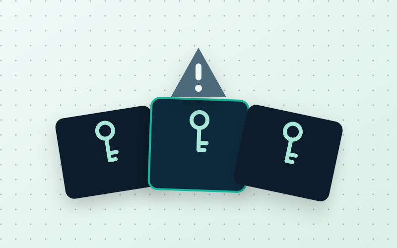

Length
Length
Length beats complexity
A four-word passphrase is easier to remember and slower to crack than “P@ssw0rd!”. Aim for at least 16 characters, and let the browser generate one when you cannot.
Field guide 02 · Identity
Long, unique, and backed by a second factor.
Account health
MFA on
Reuse zero
Vault locked
The problem
A reused password turns one leaked shopping site into a key for your email, your bank and your student record. The fix is boring and it works: use a long, unique passphrase for every account, store them in a password manager, and add a second factor that is not a text message when the service allows it. The cards below explain each habit, and the video walks through a secure sign-in in under a minute.
Watch · 37 seconds
The video is an original three-slide explainer made for this page. It has no background music, so the narration stays clear in a classroom.
Four habits
Length
A four-word passphrase is easier to remember and slower to crack than “P@ssw0rd!”. Aim for at least 16 characters, and let the browser generate one when you cannot.

ReuseWhen a shopping site leaks, reused credentials are tested against email, banking and university systems. A password manager makes unique passwords the easy option.
 Vault
Vault
An encrypted vault sits behind one strong master passphrase. Turn on autofill only for sites you trust, and keep a printed recovery code somewhere safe.
 MFA
MFA
Multi-factor authentication asks for something you have as well as something you know. An app code, passkey or hardware key beats a text message, which can be intercepted.